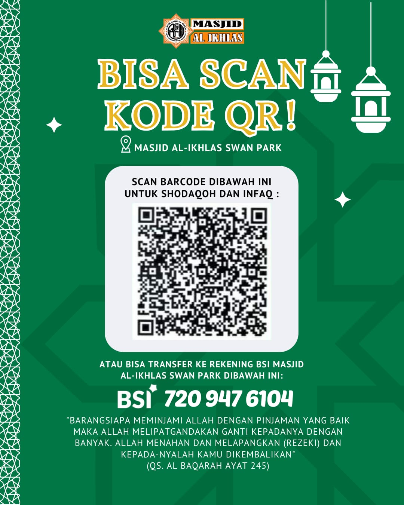

Di tengah kehidupan umat, masjid bukan hanya tempat ibadah, tetapi juga pusat kegiatan sosial, pendidikan, dan kebersamaan. Agar masjid dapat terus menjalankan perannya dengan baik, diperlukan dukungan dari jamaah melalui donasi yang ikhlas.
Donasi dapat melalui Rekening Bank BSI
No Rekening : 7130931701
Atas Nama : Masjid Al Falah
atau melalui QRIS di bawah ini:
